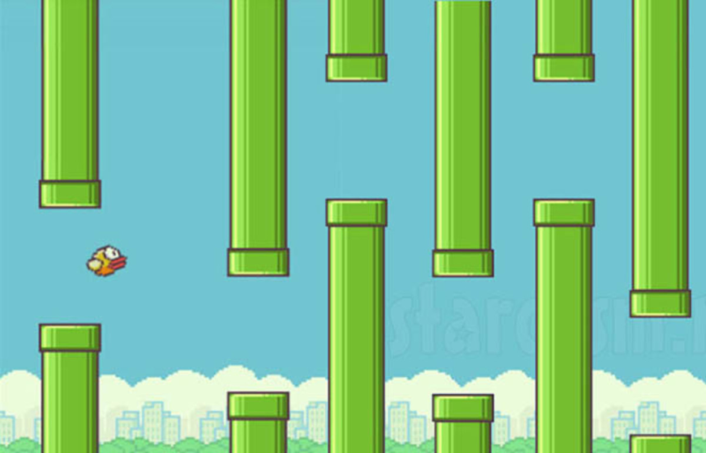

This is a simple recreation of the classic Flappy Bird game built entirely in Java using Swing and AWT. Enjoy smooth gameplay, responsive controls, and a pixel-perfect bird navigating through pipes!

🚀 Press SPACE to flap.
🧱 Avoid the pipes.
📈 Keep flying to increase your score!
🔁 Press SPACE again to restart after a game over.